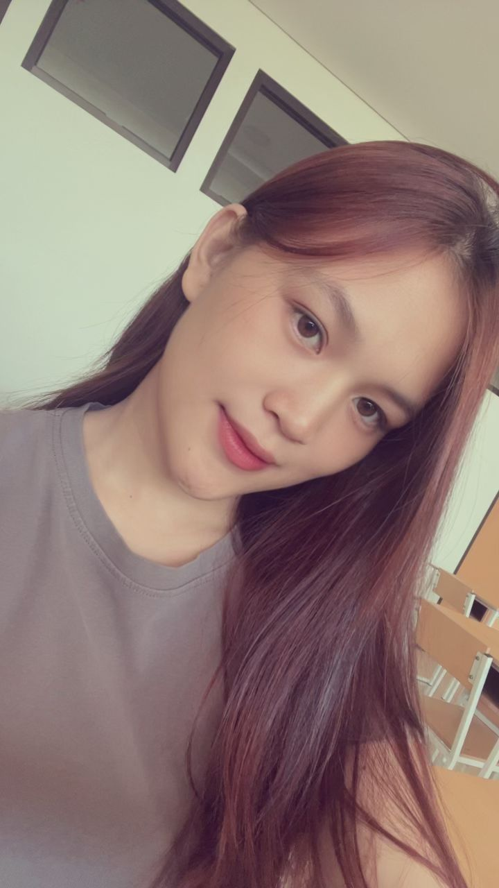

| Nama | : Wulan Melani Christy Ngion |
| Tempat, Tanggal Lahir | : Basaan, 08 September 2006 |
| Alamat | : Basaan, Minahasa Tenggara |
| Jenis Kelamin | : Perempuan |
| Kebangsaan | : Indonesia |
| No. HP | : 0852******** |
| : wulanngion@gmail.com |
Saya adalah mahasiswa Politeknik Negeri Manado yang memiliki minat di bidang teknologi dan multimedia.
Saya merupakan anak bungsu dari dua bersaudara dan berasal dari Basaan, Kabupaten Minahasa Tenggara (Mitra).
Saya dikenal sebagai pribadi yang bertanggung jawab, disiplin, dan memiliki semangat belajar yang tinggi.
Aktif dalam organisasi kampus seperti Organisasi Multimedia dan Himpunan Mahasiswa Elektro,
sehingga terbiasa bekerja sama dalam tim dan berkomunikasi dengan baik.
| 2024 - Sekarang | : Politeknik Negeri Manado |
| 2021 - 2024 | : SMA Negeri 1 Manado |